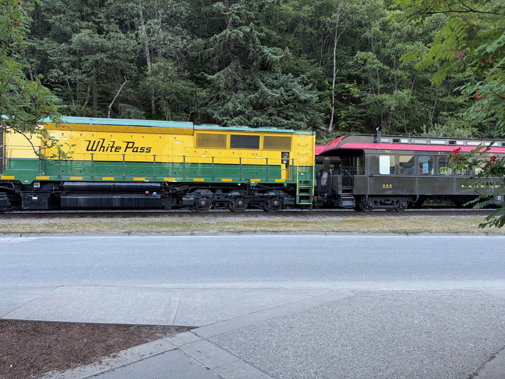
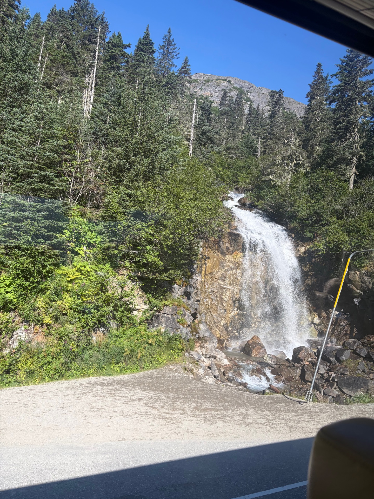
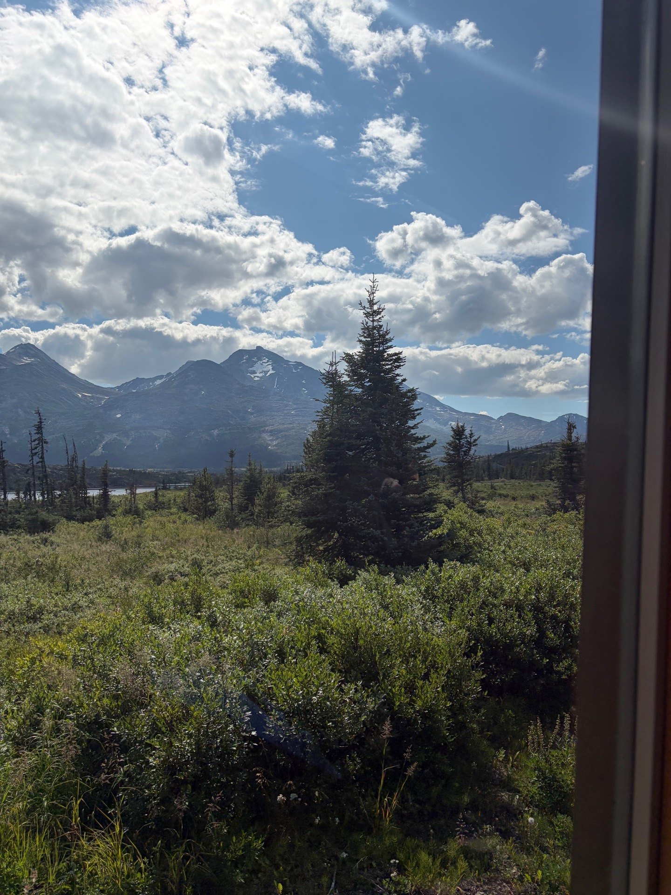
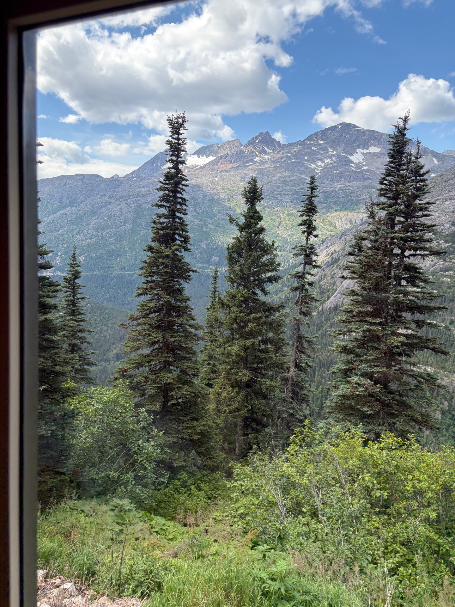
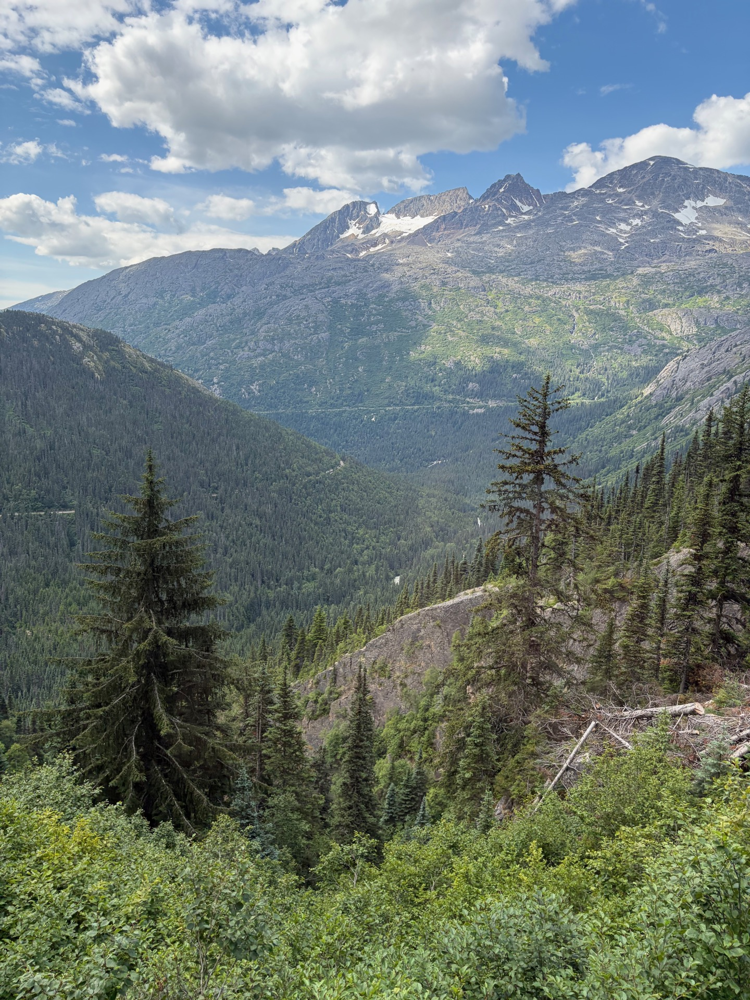
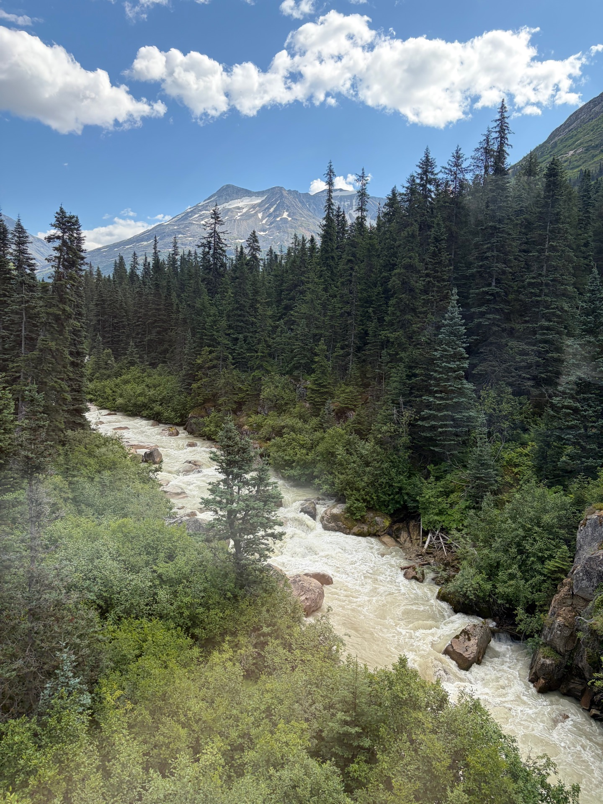
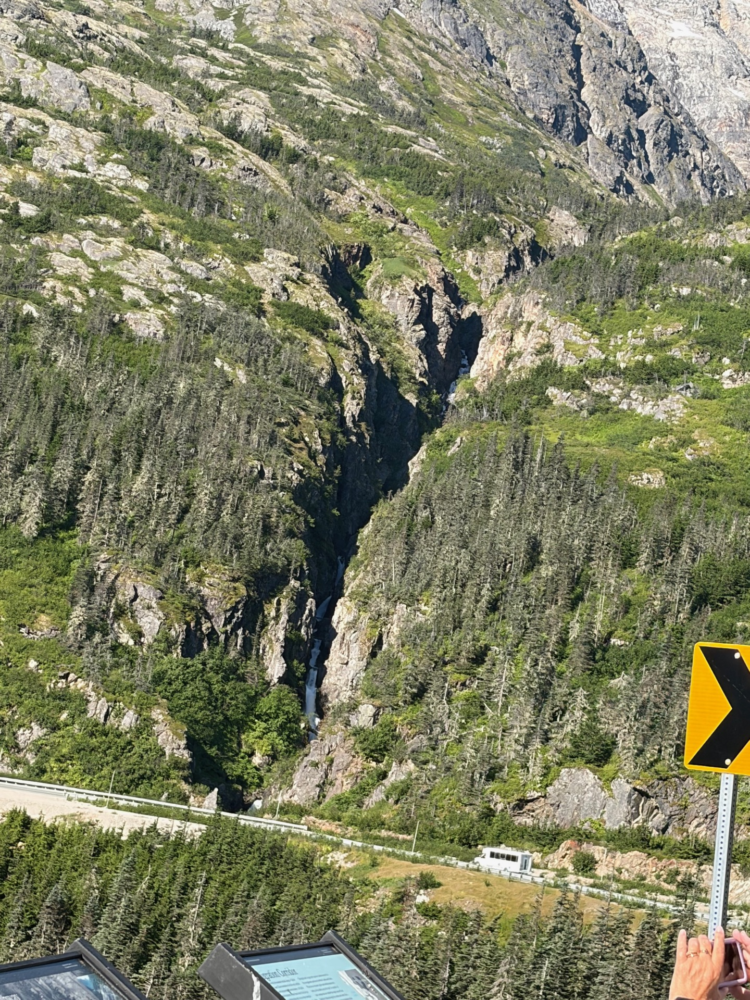
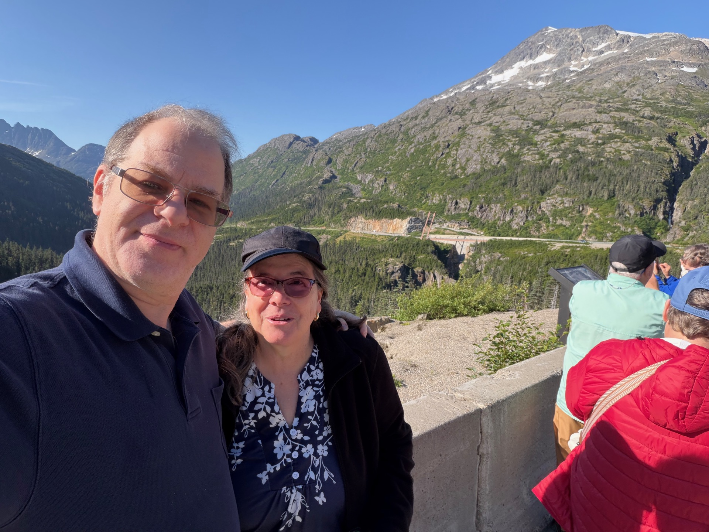
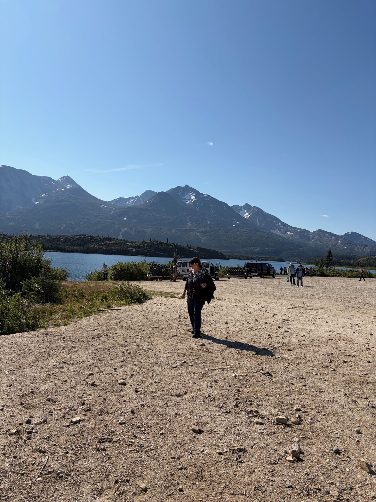

The following day brought the Charmings to Skagway, a tiny town that gold built and time forgot. It sits at the foot of towering mountains, its streets lined with the preserved relics of the Klondike Gold Rush — a place frozen at the moment the world stopped rushing through it in search of fortune and moved on without looking back.

Prince had arranged a second train ride for this adventure — the famous White Pass & Yukon Route, a narrow-gauge railway that once carried fortune-seekers up through impossible terrain toward the Yukon gold fields. The Charmings were about to follow their trail.
The White Pass Railway
The train climbed steadily out of Skagway and into the mountains, hugging cliff faces and crossing gorges on bridges that seemed too delicate for such a task. Below, the valley dropped away into mist and forest. The views were relentless — every bend revealed something more dramatic than the last.





Where the World Cracked
The train delivered the Charmings to a place where the earth itself had split — a fault line, a seam in the world where two great plates ground against each other and left their mark in the landscape.


A Brief Visit to Canada

The Charmings had always planned to cross into Canada — and Canada delivered. A still mountain lake reflected the sky and the peaks surrounding it, and the Charmings stood quietly for a moment in a second country. The tiny settlement of Fraser, Canada had perhaps a dozen souls passing through, though only two hardy souls called it home through the long Yukon winter — a fact that Snow found both fascinating and somewhat alarming.
The day was long and full — the train, the fault line, the accidental country, and then back in Skagway: a salmon bake, community theatre, and Prince collecting five flakes of gold for Snow. Not a fortune by Klondike standards, but then, the Charmings were already rich in the ways that mattered.